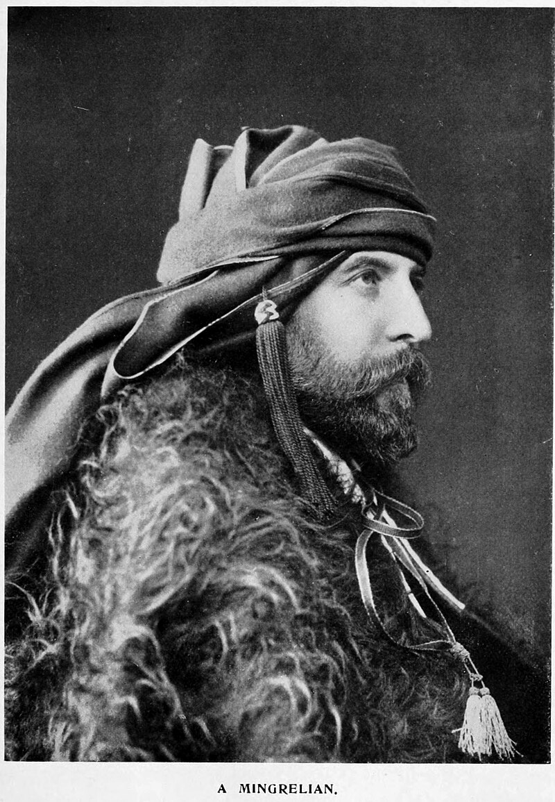

MEGRELIANS
The megrelians are an indigenous Kartvelian-speaking ethnic subgroup of Georgians, primarily residing in the Samegrelo-Zemo Svaneti region of Georgia...
Key Points:
Population and Distribution:
The Mingrelians have a population of around 400,000, mainly concentrated in Georgia, particularly in the Samegrelo-Zemo Svaneti region. Additionally, there are smaller communities in Abkhazia, Tbilisi, and Russia.
Language:
The Mingrelians speak the Mingrelian language, which is part of the Kartvelian language family. They are often bilingual, also using the Georgian language.

Notable Megrelians
Konstantine Gamsakhurdia (1893–1975), one of the most influential Georgian writers of the 20th century
Zviad Gamsakhurdia (1939–1993), the first President of Georgia (in office: 1991–1992)
Lavrentiy Beria (1899–1953), Soviet chief of secret police in the later Stalin era
Merab Kostava (1939–1989), Georgian dissident, poet, musician, National Hero of Georgia
Ambrosi Khelaia (1861-1927) Catholicos-Patriarch of all Georgia
Şevkefza Sultan (c. 1825–1889), Ottoman Valide sultan in 1876
Guram Gabiskiria (1947-1993) National Hero of Georgia
Zhiuli Shartava (1944-1993) National Hero of Georgia
Geno Adamia (1936-1993) National Hero of Georgia
Zaza Damenia – Georgian army corporal, National Hero of Georgia
Alexander Berulava (1945-1993) was awarded Vakhtang Gorgasali First grade order for his courage and heroism in the fight for the protection of the homeland and its territorial integrity
HISTORY
History
In the 13th century BC, the Kingdom of Colchis was formed as a result of the increasing consolidation of the tribes inhabiting the region,
which covered modern western Georgia.
The endonym margalepi (მარგალეფი) is presumably reflected in the Greek Manraloi (Μάνραλοι), recorded as a people of Colchis by Ptolemy in the 2nd
century BC.
By the mid-3rd century, the Lazi tribe came to dominate most of Colchis, establishing the kingdom of Lazica (or Egrisi in Georgian sources).
In the 5th century, the first Christian king Gubazes I declared Christianity as a state religion of Lazica
. Locals began to have closer contact with the Greeks and acquired various Hellenic cultural traits, including in some cases the language.
From 542 to 562, Lazica was a scene of the protracted rivalry between the Eastern Roman and Sassanid empires, culminating in the Lazic War.
Emperor Heraclius's offensive in 628 AD brought victory over the Persians and ensured Roman predominance in Lazica until the invasion and conquest
of the Caucasus by the Arabs in the second half of the 7th century.
In the 7th century Lazica fell to the Muslim conquest; however, in the 8th century
combined Lazic and Abasgian forces successfully repelled the Arab occupation. In 780 Lazica was incorporated into the Kingdom of Abkhazia as a result of dynastic succession, the latter led the unification of the Georgian monarchy in the 11th century.
The nobility and clergy of Lazica switched from the Hellenic ecclesiastic tradition to the Georgian, and Georgian became the language of culture and education.
After the fragmentation of the Kingdom of Georgia in the 15th century, Mingrelia was an autonomous principality within the Kingdom of Imereti, until being annexed by the Russian Empire in the 19th century.
In several censuses under the Russian Empire and the early Soviet Union, Mingrelian were considered a separate group,
largely because at the time of the annexation Mingrelia was politically separate from eastern Georgia,
the historical political and cultural centers of the Medieval Georgian Kingdoms. They were reclassified under the broader category of Georgian in the 1930s.
Currently, most Mingrelian identify themselves as a subgroup of the Georgian nation and have preserved many characteristic
cultural features – including the Mingrelian language – that date back to the pre-Christian Colchian era.
Lavrentiy Beria, the Chief of Stalin's secret police, was a Mingrelian.
(As is well-known, Stalin himself was a Georgian.)
The first President of an independent Georgia, Zviad Gamsakhurdia (1939–1993), was a Mingrelian and also a creator of Georgian nationalism.
[14] Therefore, after the violent coup d'état of December 21, 1991 – January 6, 1992, Mingrelia became the centre of a civil war,
which ended with the defeat of Gamsakhurdia's supporters.
Approximately 180,000–200,000 Mingrelian and other subgroups
of Georgian people have been expelled from Abkhazia as a result of the Abkhaz–Georgian conflict in the early 1990s and the ensuing ethnic cleansing of Georgians in this separatist region.